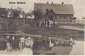
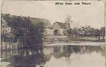
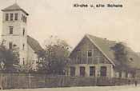
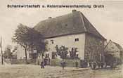

|

alte Schule

Blick über den Teich

Kirche

Schenke
|


Schwemsal feierte im
September 1994 das 600 jährige Jubiläum der Ersterwähnung.
In der Geschichte des Ortes ging es auf und ab. Im Dreißigjährigen Krieg
wurde der Ort vollständig zerstört. Dabei ging auch das Alaunwerk
zugrunde, das sich seit 1560 als ältestes industrielles Werk im Gebiet des
Landkreises Bitterfeld im Ortsteil Schwerz befand. Nach dem
Dreißigjährigen Krieg wurde es wieder aufgebaut und hatte um 1800 herum
seine Blütezeit. Im Landschaftsmuseum in der Burg Bad Düben ist darüber
mehr zu erfahren.
Dort ist auch die Bergschiffmühle zu sehen. Bis 1954 hatte sie ihren
ursprünglichen Standort auf Schwemsaler Gebiet an der Mulde inne.
Schwemsal liegt an der Gabelung der Bundesstraße 107 und 183 und bildet
gleichsam den Mittelpunkt des Kreises, der die Städte Leipzig, Wittenberg,
Dessau und Halle berührt. Nahegelegene Ausflugsziele, wie die Kurstadt Bad
Düben, das Rote Ufer und der Schiffmühlenliegeplatz an der Mulde, aber
auch gute Wanderwege durch das ausgedehnte Waldgebiet der Dübener Heide
zum Ochsenkopf, zum Lutherstein, zum Köhler und vielen anderen Zielen
verlocken zum Start gerade in Schwemsal, ob per Fahrrad oder per pedes.
Besonders stark besucht werden wir zur Pilzsaison. Die Fläche der Gemeinde
beträgt etwa 17 Quadratkilometer, wovon ca. 10 Quadratkilometer Waldfläche
sind.
Aber auch Schwemsal selbst lädt zum Erholen und Entspannen ein. Der Ort
hat seinen Heidedorfcharakter weitestgehend bewahrt. Viel Grün im Dorf und
um das Dorf herum sowie mehrere naturnahe Teiche vermitteln eine
beschauliche Atmosphäre.
Auf dem Reithof "Zum Schwalbennest" bestehen alle Möglichkeiten, sich
reiterisch zu betätigen, aber auch für Übernachtungen soll gesorgt werden.
Eine gute Gastronomie gehört selbstverständlich zu dem, was unser Ort
bieten kann. Durch die günstige Lage am Naturparkrand und an zwei
Bundesstraßen wird Schwemsal in Zukunft als attraktiver Wohnstandort
Profil gewinnen. In jüngster Vergangenheit wurde mit dem Bau einer netten
kleinen Einfamilienhaus-Siedlung begonnen. Weitere Standorte für
Wohnanlagen mit vernünftigen Grundstückspreisen sind möglich. Ruhig, aber
verkehrsgünstig gelegen, bietet Schwemsal so vielen Städtern eine
Alternative zum Leben im "Wohnsilo". Damit und mit der wachsenden
Heide-Touristik wird sich das Dorf einen Namen machen.
Wenn Sie sich hier umsehen wollen, nu zu! Wir beantworten gern all Ihre
Fragen.


 |